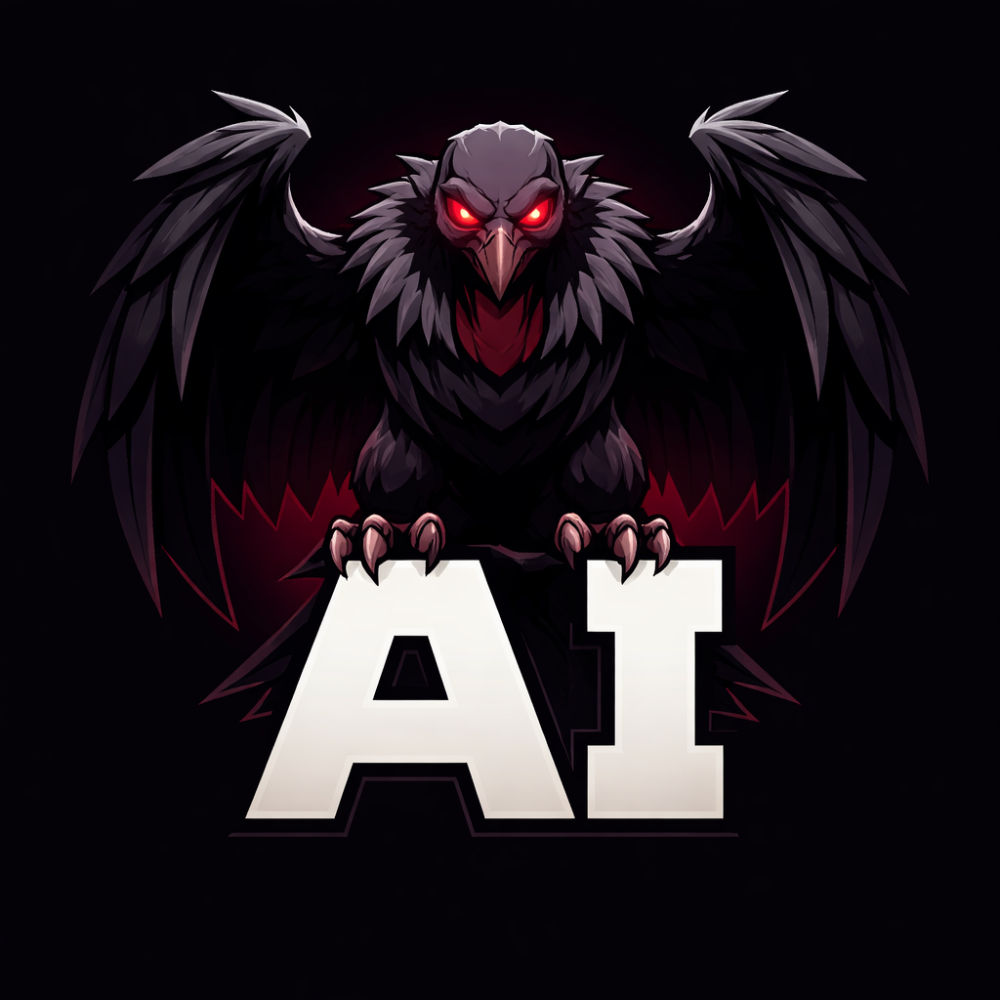

Code intelligence for Scala.
Works without a build. Gets smarter when you compile.
Returns raw text. class Config matches ConfigStore, ConfigParser. Two packages with Config? grep hits both.
Requires build server, full compilation, minutes of startup. Designed for humans in IDEs, not agents making 50 tool calls per task.
Word-boundary matching beats grep, but still can't distinguish app.Config from db.Config. No type awareness.
Text-based by default. Type-aware when compiled. One flag: --semantic.
$ intel4s rename Config AppConfig 6 edits in 3 files ← hits BOTH packages src/App.scala Config → AppConfig ✓ correct src/Db.scala Config → AppConfig ✗ WRONG package!
$ intel4s rename Config AppConfig --semantic 2 edits in 1 file ← only app.Config 2 symbols named 'Config'. Renaming only: app/Config# Untouched: db/Config#
Enable: -Xsemanticdb (Scala 3) | semanticdbEnabled := true (sbt) | Metals: automatic
Type-aware rename. Two Config in different packages → only renames the right one. Word-boundary safe.
Bidirectional: what a method calls (callees) + who calls it (callers). With --semantic: compiler-precise callees.
Dead code detection. Bloom filter pre-screen + text verification. Finds symbols with zero external refs.
Generate override stubs with type parameter substitution. T → User resolved automatically.
One-shot: definition + doc + members + implementations + imports. Saves 4-5 tool calls.
Type-aware references when SemanticDB is available. Disambiguates same-named symbols across packages.
One command. Both directions.
$ intel4s call-graph processPayment --in PaymentService --semantic Call graph for PaymentService.processPayment (src/Payment.scala:15) Calls (3): def validate (com.example) — src/Validator.scala:8 def charge (com.billing) — src/Billing.scala:22 def notifyUser (com.notify) — src/Notifier.scala:5 Called by (4): src/Handler.scala:30 — svc.processPayment(amount) src/BatchJob.scala:15 — payments.foreach(processPayment) src/API.scala:42 — service.processPayment(req.amount) src/Test.scala:8 — svc.processPayment(BigDecimal("9.99"))
+ 18 more: grep, diff, tests, coverage, ast-pattern, overrides, doc, context, batch, packages, package, summary, entrypoints, annotated, file, symbols, index, graph
Project Files Symbols Cold Warm Production monorepo 14,219 170,094 5.3s 445ms Scala 3 compiler 18,485 144,211 2.7s 349ms
Importers found for Compiler. intel4s resolves wildcard imports. grep misses 98.6%.
Definition, ExtendedBy, ImportedBy, UsedAsType, Usage, Comment — ranked by confidence.
Semantic rename with SemanticDB. Two Config in different packages → only the right one.
MCP Server (Cursor, Windsurf, Cline) { "mcpServers": { "intel4s": { "type": "stdio", "command": "/path/to/intel4s", "args": ["mcp"] } } }
Claude Code $ /plugin install intel4s $ /intel4s:setup intel4s setup complete: Build tool: sbt (Scala 3.3.3) Project: 228 files, 1791 symbols CLAUDE.md: created Skills: setup, semanticdb, upgrade, doctor Agent: scala-expert (auto-invoked)